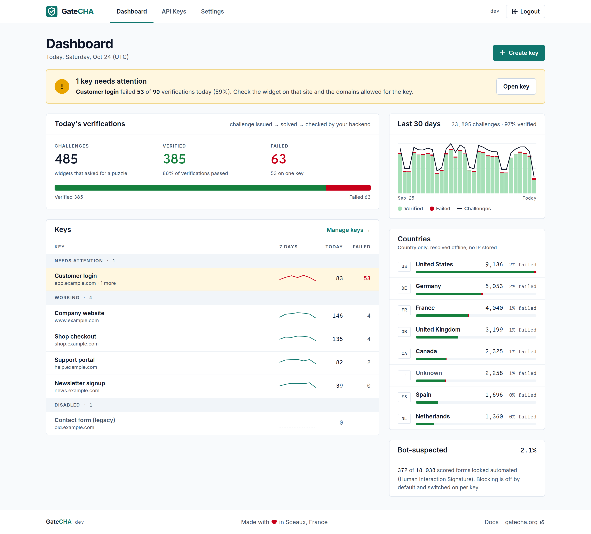

Self-Hosted CAPTCHA
Management Server
Open-source ALTCHA-compatible server with API keys, multi-site support, replay protection, and a statistics dashboard. No cloud. No tracking. Your server.

Features
Everything you need to manage CAPTCHA challenges on your own infrastructure
Drop-in ALTCHA server
- ALTCHA-compatible
- Works with the official ALTCHA widget: same protocol, same integration.
- Per-site API keys
- Custom difficulty, TTL and domain restrictions, including
*.example.comwildcards. - Replay protection
- Consumed challenges are tracked and rejected on reuse.
- Statistics
- Challenges issued, verified and failed, per key and per day.
Abuse controls
- Per-key rate limiting
- Caps challenge and verify calls for each key, on top of the global per-IP limiter.
- Adaptive difficulty
- Raises the proof-of-work cost for sources requesting at an abusive rate. Your configured difficulty stays the floor; it never blocks.
- Human Interaction Signature
- Scores how a form was filled from aggregate signals only. Monitor mode by default; enforcement is opt-in per key.
Boring to run
- Single binary
- ~14.2 MB with the Vue.js dashboard embedded. Linux, macOS and Windows, amd64 and arm64.
- One container
- ~23.8 MB image running as a non-root user. Nothing else to deploy.
- SQLite or MySQL
- SQLite embedded by default, a
-mysqlbuild when you need it. No Redis, no external services. - Sensible defaults
- Secret rotation, CORS configuration, automatic cleanup of expired challenges. The MCP endpoint for AI clients stays off until you enable it.
How It Works
Three steps to protect your forms
Configure
Create an API key in the GateCHA dashboard with your desired difficulty, TTL, and domain restrictions.
Add Widget
Drop the ALTCHA widget into your HTML form with your GateCHA challenge URL and API key.
Verify
GateCHA verifies the proof-of-work solution server-side, rejects replays, and logs statistics.
Installation
Get up and running in minutes
# docker-compose.yml
services:
gatecha:
image: ghcr.io/upellift99/gatecha:latest
container_name: gatecha
restart: unless-stopped
ports:
- "8080:8080"
volumes:
- gatecha_data:/app/data
environment:
- GATECHA_ADMIN_PASSWORD=changeme
volumes:
gatecha_data:Then run docker compose up -d and open http://localhost:8080. Log in with admin / changeme.
docker run -d -p 8080:8080 \
-v gatecha_data:/app/data \
-e GATECHA_ADMIN_PASSWORD=your-password \
ghcr.io/upellift99/gatecha:latestOpen http://localhost:8080 and log in with admin and your chosen password.
# Requires Go 1.26+ and Node.js 20+
git clone https://github.com/Upellift99/GateCHA.git
cd GateCHA
make build
./gatechaThe dashboard is available at http://localhost:8080. Default credentials: admin / changeme.
WordPress Plugin
Official integration for WordPress sites
Protect your WordPress forms with GateCHA's official plugin. Privacy-first CAPTCHA powered by proof-of-work — no cookies, no fingerprinting, no third-party services.
- Privacy-first: no cookies, no fingerprinting, GDPR-compliant
- Invisible proof-of-work — no image puzzles for users
- Bundled ALTCHA widget — no external CDN dependency
- Fail-open / fail-closed modes for resilience
-
[gatecha]shortcode for any custom form
No server to run? GateCHA Cloud hosts GateCHA for you in France, for businesses; one click from the plugin's settings.
14 Protected Form Types
WordPress Core
- Login
- Registration
- Password Reset
- Comments
WooCommerce
- Login
- Registration
- Password Reset
Form Plugins
- Contact Form 7
- WPForms
- Gravity Forms
- Elementor Pro
- Forminator
- Formidable Forms
- HTML Forms
GateCHA vs ALTCHA Sentinel
Both run on your own server with the same widget. They differ in licence and scope.
| GateCHA | ALTCHA Sentinel | |
|---|---|---|
| Hosting | Self-hosted | Self-hosted |
| Licence | MIT, open source | Commercial licence |
| Price | Free | Paid licence, 30-day trial |
| Calls home | Never | Licence check only, no traffic data |
| Widget | Official ALTCHA widget | Official ALTCHA widget |
| Bot detection | Proof-of-work, adaptive difficulty, HIS scoring, per-key rate limits | Proof-of-work with risk scoring: HIS, threat intelligence, self-tuning policy |
| Content moderation | Spam classifier, phishing detection | |
| Team access | One admin account | Users and accounts with roles |
| Database | SQLite or MySQL | Embedded, or an external database |
GateCHA is not affiliated with ALTCHA. ALTCHA® is a trademark of its owner. Sentinel details are taken from altcha.org in October 2026; check there for current plans.
Frequently Asked Questions
What is GateCHA?
GateCHA is a self-hosted server that implements the ALTCHA proof-of-work CAPTCHA protocol. It provides API key management, multi-site support, replay protection, and a statistics dashboard. Think of it as a free, lighter, open-source alternative to ALTCHA Sentinel.
How does it differ from ALTCHA Sentinel?
Both are servers you run on your own infrastructure for the official ALTCHA widget, so data ownership is the same. The difference is the licence and the scope. ALTCHA Sentinel is commercial software (Professional or Enterprise licence, 30-day trial) with a broader engine: risk scoring, threat intelligence, content moderation, and multi-user accounts. GateCHA is free and MIT-licensed, never calls home, and covers the essentials: per-site keys, replay protection, adaptive difficulty, rate limits, HIS scoring and statistics. If you need the full detection engine or vendor support, Sentinel is the better fit. GateCHA is not affiliated with ALTCHA.
Does it work with the official ALTCHA widget?
Yes. GateCHA implements the same challenge/verify API that the ALTCHA widget expects. You can use the official ALTCHA widget (MIT licensed) from npm or CDN without any modification.
What are the system requirements?
Docker (any platform) or Go 1.26+ and Node.js 20+ to build from source. GateCHA uses SQLite internally, so there are no database servers to set up. The Docker image is approximately 23.8 MB.
Is there a WordPress plugin?
Yes. The official GateCHA WordPress plugin protects 14 form types including WordPress core forms, WooCommerce forms, and popular form builder plugins like Contact Form 7, WPForms, Gravity Forms, and more. It requires PHP 7.4+ and WordPress 6.0+.
How is user privacy protected?
GateCHA uses proof-of-work challenges instead of image puzzles. There are no cookies, no fingerprinting, no tracking, and no data sent to third parties. All data stays on your server. The approach is fully GDPR-compliant.
Can I use it with multiple websites?
Yes. You create separate API keys for each site with individual difficulty, TTL, and domain restriction settings. Statistics are tracked per key, giving you visibility into each site's CAPTCHA activity from a single dashboard.